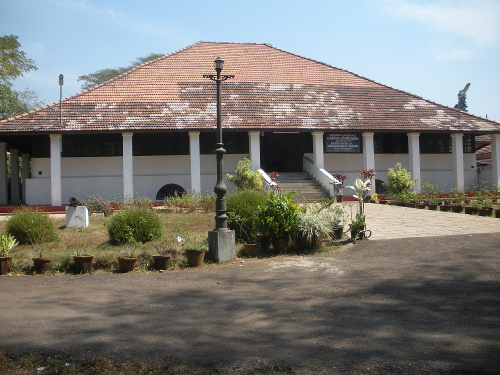
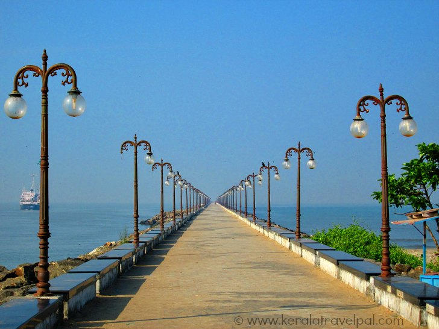

Kozhikode
Kozhikode, also known in English as Calicut, is the second-largest metropolitan city in the State of Kerala. It is also the 19th largest in the country with a population of two million according to the 2011 census. In antiquity and the medieval period, Kozhikode was dubbed the City of Spices for its role as the major trading point for Indian spices. It was the capital of an independent kingdom ruled by the Samoothiris (Zamorins). The port at Kozhikode acted as the gateway to medieval South Indian coast for the Chinese, the Arabs, the Portuguese, the Dutch and finally the British.
Top Spots
Pazhassi Raja Museum And Art Gallery

Mananchira Square
Beypore

Kadalundi Bird Sanctuary
Kozhippara Falls
The building that houses the museum was constructed in the year 1812 and was then known as East Hill Bungalow. The bungalow was converted to an archaeological museum in 1976. In the year 1980, the building was renamed as the Pazhassi Raja Archaeological Museum.
The museum has exhibits from the megalithic age and the Indus Valley Civilization. The exhibits include ancient pottery, toys, stone and other metal sculptures. Coins, Models of temples, Burial urns and umbrella stones (tomb stones of rulers) are part of the museums's collection. The museum also has a collection of war weapons used by British soldiers and the official caps of British and French soldiers.
The special collections of the museum include the Panchaloha idols and stone statues described as 'War heroes'.

Mananchira was built as a bathing pool by the Zamorin Mana Vikrama, the feudal ruler of Kozhikode in around the 14th century. at the time of Tippu sultan Mysore ruler he made this as drinking water source as a gift For Sayed Jifri. The laterite obtained from excavating the pond was used to construct two palaces to the east and west.
Mananchira Square, a park complex surrounding the lake was opened in 1994. Previously the Mananchira Square was known as Mananchira Maidanam (Playground) and was famous for football.
Mananchira Square is named after the man-made lake Mananchira around which it is situated in the centre of the city. It is named after Mahadevan Samoothiri, the erstwhile ruler of the Kozhikode Kingdom, known as Mana-vedan Chira (pond) and later transformed to Mana-an-Chira.
Beypore or Beypur is an ancient port town and a locality town in Kozhikode district in the state of Kerala, India. It is located opposite to Chaliyam, the estuary where the river Chaliyar empties into Arabian Sea.
There is a marina and a beach while Beypore port is one of the oldest ports in Kerala, which historically traded with the Middle East. Beypore is noted for building wooden ships, known as dhows or urus in the Malayalam language. These ships were usually bought by Arab merchants for trading and fishing but are now used as tourist ships.
According to Captain Iwata, founder member of the Association of Sumerian ships in Japan, Sumerian ships might have been built in Beypore. There is evidence to prove that Beypore had direct trade links with Mesopotamia and was a prominent link on the maritime silk route.

The Kadalundi Bird Sanctuary spreads over a cluster of islands where the Kadalundipuzha River flows into the Arabian Sea. The Sanctuary hill is around 200 m above sea level. It is 19km from Kozhikode city centre.
Over a hundred species of native birds have been recorded in the sanctuary, including about 60 species of migratory birds which visit seasonally; these include terns, gulls, herons, sandpipers and cormorants. Notable species are whimbrels and brahminy kites. The sanctuary is well known for a wide variety of fish, mussels and crabs.[1] Some species of snakes, cobras, vipers and kraits also live here.

The beautiful Kozhippara waterfalls is an ideal location for trekking and swimming in Kerala. It is one of the best waterfalls, which offer plenty of opportunites to adventure enthusiast, who like to explore this spectacular destination. This place is surrounded by dense forests and maticulous landscapes, ideal for trekking and rock climbing. A large number of tourists visit this exotic waterfall to enjoy the serene setting of the jungle and to feel relaxed in the midst of tranquil forest.
Kozhippara houses a beautiful river in the heart of the jungle, lined with coconut palms and lush green trees and which is why its easy to spot exotic birds and water animals here, unusual to spot elswhere.